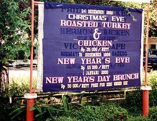
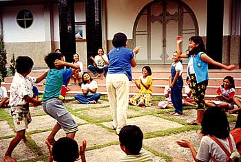

Sent: 11 Jan 2000 14:10 GMT
web version |
 |
| Prior Trav-E-Log: Xmas | The historic port of the spice trade is once again Makasar. |
(Note:) This is the 15th in a series of Trav-E-Logs sent while traveling in S.E.Asia between Oct 16, 1999 and Jan 22, 2000.Hi folks,
I'm finally back in touch with the world. It's been great, and long, so I have to send several episodes over the next few days. Here goes . . . .
Typical locations for intercity bus terminals and stations in Indonesia are on the outskirts of towns and cities, and Makasar is no exception. So hopped a bemo* to "city center" for 500 rupia, plus a similar amount for my pack, which takes the space of one passenger. When the driver asked me which street, after we had traveled a few kilometers, he raised the price to 20,000 rupia to my response. I figured the markings on my map were correct for "city center", but where he took me was much larger and livelier than the "central Market" close to my hotel. We finally agreed on 7000 rupia, and he delivered me to the front door, several km further away from his city center. Tired, dirty, and hungry again, I removed my shoes, climbed the two flights of stairs to the dorm, plopped my valuables in a locker, unpacked down to a clean change of clothes, and hit the mandi*.
Wearing a fresh change of clothes, I check to see if anyone is ready for dinner. Nope, so out the door I go and find a packed place, without sign or name. That is a very good sign, so I enter and order the cumi-cumi (squid), and it is served with lots of cooked vegetables. They are all out of Coke and try to substitute milk tea, which I refuse. Now that the stomach is satisfied, it's back to the hotel, talk to some folks I saw briefly in the Togian Islands, excuse myself and fall asleep under the supplied mosquito net. At 8 AM the next morning, it is a brisk walk to the Pelni office, where quite a crowd has gathered around the sales counter. Does not look good, so I head up the stairs to the offices. There I'm told to take the elevator to "D", to buy my ticket. The elevator doors open into an office area, and I'm directed to the backside of the sales counter, where 60 or so would-be purchasers are amassed at the front side. The Pelni clerk invites me to sit down, while she finishes the transaction in progress. It's air conditioned on this side of the counter, so I sit and glance around the office. She asks what she can do for me, and I answer with "Is that a picture of your baby?" "Yes, he's 10 months old." I ask for a ticket on the Awu to Maumere, Flores, and she asks me what class. "2nd." "123,500 Rupia." Suddenly, I have a 2nd class ticket on a ship that was sold out 10 days earlier. Sometimes it pays to shun the tee, for a shirt with collar. On the way back to the hotel, I stop at the post office and send out the Trav-E-Log composed in Poso. Lots of e-mail -- thanks to all for your kind words. I owe tons of replies; thanks for your patience.
While traveling in foreign countries, we always seek out and photograph unusual sights. But it's also fun to see just how much folks are the same, the world over. While walking around Rantepao, children's laughter could be heard coming from a church-school playground. Peaking through the gate, I saw "Simon says", Tana Toraja style. Fortunately I was able to snap this picture before they observed the observer.
*MANDI: Southeast Asian method of taking a bath, by squatting near a floor drain and pouring water over oneself from a reservoir, by the same name. It may look like a bath tub, but is your only source of fresh water -- don't contaminate it. Often, the mandi and toilet are in the same room.
*BEMO: A micro van/bus that travels along a city street, looking for
passengers. These tiny vans will try to jam up to 14 paying fares into
them at one time. As one approaches, you call out your destination, and
if the driver nods, you jump in. Most cities have fixed prices, along certain
routes, but to be safe, tell the driver how much you expect to pay.